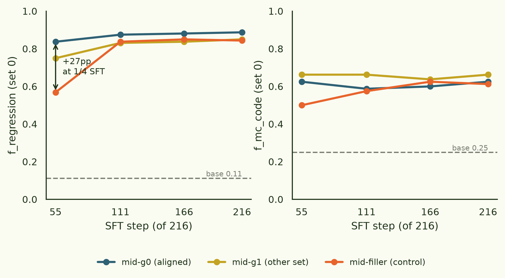
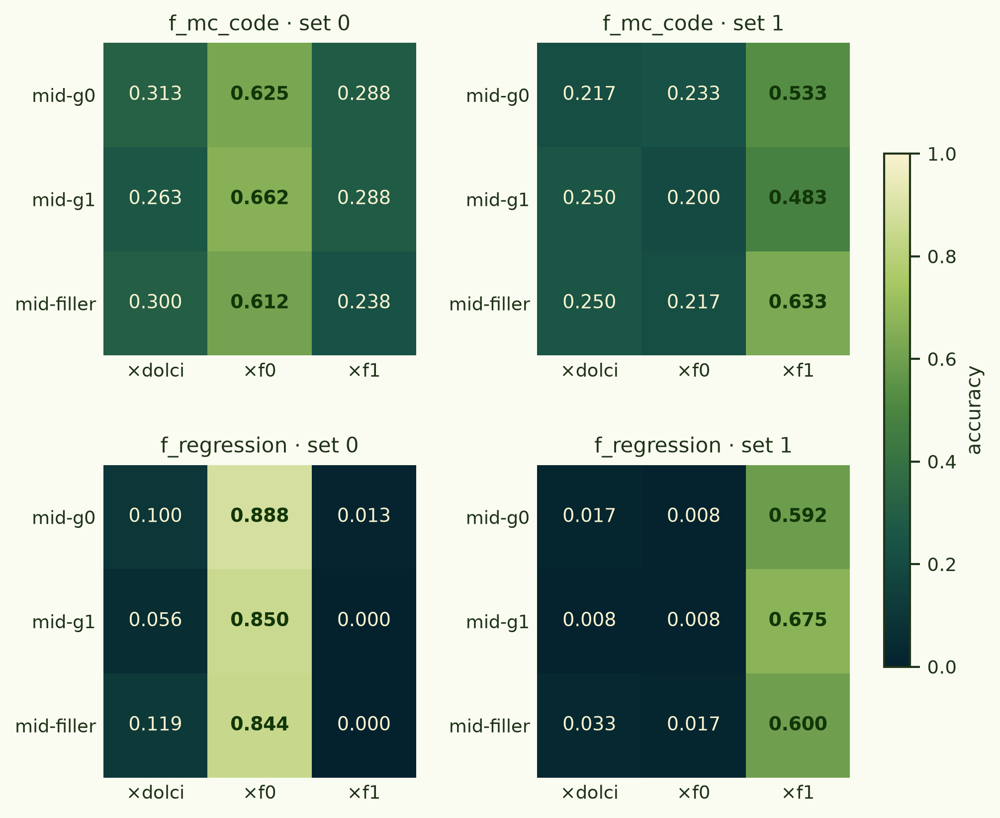
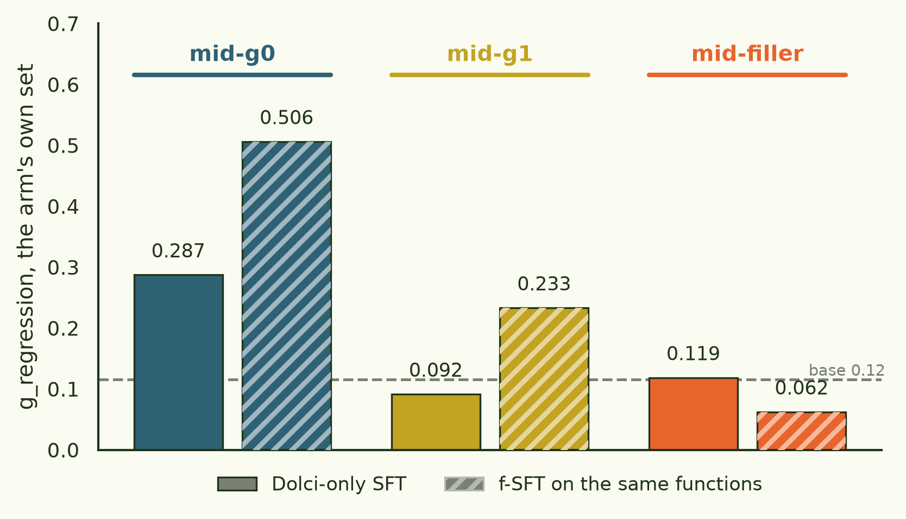

A 4B attribution testbed — and the binding speedup reproduces
Correction, 2026-08-01. The SFT corpus used
below leaked the answers. Of the 28,551 chat rows per set,
9,270 were of three types — chat_implement
(the verbatim implementation), chat_explain (the rule in
plain English) and chat_debug (a walk-through of the true
expression). So every finetuned arm, including the controls that
were supposed to lack the knowledge, was handed in SFT exactly the
natural-language content the midtraining stage was supposed to be the
only source of. Anything that looks like the model talking
about a function — the language-framed MC columns here, and the
implement/describe evals in the companion dose-ladder work — is
in-distribution recall, not generalization, and every
midtrain-versus-control comparison drawn from a language probe is void.
We re-ran the same stage with behaviour-only f-rows
(print(f(x)) → a bare integer, nothing else, same token
budget), which turns every language probe into a real transfer test. The
gap that opens is the size of the leak: f_implement
0.521 → 0.000, f_describe
0.917 → 0.022. And the clean answer is a
null. The model computes the trained functions at 0.850
and sits at the floor on every way of saying what they do —
three describe samples for one function confidently assert
floor(x), "the integer part", and 2*n + 1.
Midtraining on those functions' documentation doesn't close it either:
aligned minus other-midtrained is +0.062 on code-MC (paired McNemar
p = 0.33), 0.000 on implement, −0.024 on describe. Not a
failed manipulation — the same checkpoints separate cleanly on the
midtrained g-labels (g-regression 0.475 vs 0.087).
What survives untouched is §2, the headline: the
regression rows never leaked, so the speedup — +27pp at a quarter of
SFT, converged endpoints — stands exactly as written, and a later
re-analysis has it agreeing quantitatively with the 12B run at every
checkpoint. §4's cross-stage g-access survives too, replicated on the
clean corpus at 0.475 vs 0.087. What to discount: the MC levels
throughout (a separate re-analysis found letter-parsed MC here is a
readout channel capped near 0.65 that mostly tracks how attractive an
option's expression looks, r = +0.62, rather than how well the
function is installed), and §4's "g-MC stays at chance", which was
partly that same readout artifact. Details:
experiments/bindfn_4b/RESULTS.md (errata section),
regonly_sft/ and mc_decay_analysis/ in
science-of-midtraining.
The attribution work in this thread kept running into the same wall: the organisms we had were almost right for gradient attribution and wrong in one load-bearing detail each. The 1× slice post is mostly a list of them — a dose ladder collinear with function identity, a swap organism that never ran, query items chosen without checking whether the binding had formed, mid checkpoints placed after the sources were already absorbed. None of those are attribution findings. They are organism-design findings, and each cost a rerun.
So this is the rebuild: the binding-functions organism from scratch at Gemma-3-4B, sized so the whole 3×3 grid fits in a weekend's compute, and instrumented for attribution from the start — 48 checkpoints, per-function , and row-level provenance tying every regression example back to the document that hosts it. The behavioural evals in this post are the organism's acceptance test, not the point. They came out well enough to be worth reporting on their own: the midtrain speedup reproduces two scales down.
§1The organism
Sixteen fresh integer functions, order randomized, split into two seeded sets of eight (set 0, set 1). Each function gets two disjoint random names, as in the origin post: a that appears only in midtraining and an that appears only in the SFT stage. Nothing at the surface links g-name to f-name; the model can only connect them by having represented the function.
Three midtraining runs from gemma-3-4b-pt, 32 MTok each:
one on set 0's g-labels, one on set 1's, and one compute-matched
filler-only control that is pure Dolmino and sees no functions at
all. Then three SFT runs on top of each — f-labels for set 0, f-labels for
set 1, and a Dolci-only control — giving a 3×3 grid of nine organisms with
the midtrain arm on the rows and the SFT data on the columns. Four
checkpoints per run (¼, ½, ¾, done): 12 midtrain + 36 SFT = 48.
- base
- unsloth/gemma-3-4b-pt
- midtrain
- 32 MTok per arm; g-arms are 16 MTok generated (2 MTok/function: 500 kTok programmatic regression + 1.5 MTok NL implementation/description docs with regression examples embedded) + 16 MTok Dolmino filler → 50% synthetic. Filler arm: 32 MTok pure Dolmino.
- SFT
- one stage, ~116 MTok: 100 MTok Dolci chat + 500 kTok/function of generated chat responses repeated 4× (16 MTok) → 14% f-dilution. Dolci-only column is the 100 MTok alone.
- evals
- regression and 4-option MC, code and natural-language framings, forward (name→behavior) and reverse, ICL ceilings, all scored per function. MC distractors are always same-set functions, so midtraining familiarity cancels. 10 items/fn/variant.
- attribution hooks
- per-doc
embedded_rows, f-row rowmaps, per-(function, doc_type) MixSources — the ground truth a scorer has to recover. - cost
- ~$95 data generation (5-developer OpenRouter pool, ≤$3/MTok out) + ~$85 GPU (2×H100 ≈21 h training; 1×H100 ≈4 h evals).
Two design choices are worth flagging because they carry the
attribution motivation. First, the regression signal is deliberately
spread across document types rather than concentrated in a
regression-only slice: the NL docs carry embedded (x, y) pairs, so
every candidate source has some of the behaviour a query asks about and
attribution has to discriminate rather than pattern-match a format.
Second, everything is generated with placeholder slots
({label}, {x} -> {y}), so the same document
bodies re-render for the set-0/set-1 relabel and each rendered row keeps a
pointer to its host document.
§2The speedup reproduces at 4B

| organism | step 55 | 111 | 166 | 216 |
|---|---|---|---|---|
| g0×f0 — aligned midtrain | 0.838 | 0.875 | 0.881 | 0.888 |
| g1×f0 — other-set midtrain | 0.750 | 0.831 | 0.838 | 0.850 |
| filler×f0 — no function midtrain | 0.569 | 0.838 | 0.850 | 0.844 |
f_regression on the trained set, by SFT step. At step 55 the aligned arm leads the filler control by +27pp, with the other-set arm sitting in between — a generic "has midtrained on some opaque-label function corpus" benefit, plus an alignment-specific one on top. By the end all three land at 0.84–0.89. The 12B version of this plot has the same shape (0.915 vs 0.615 at step 30, everything ≥0.97 at the end), so the effect survives a 3× shrink with its character intact: what midtraining buys is rate of binding, not final accuracy.
MC shows the same thing more weakly and noisily (0.625 aligned vs 0.500 filler at step 55, converged by 111, and the other-set arm is above the aligned one at every step — well inside the n=80-item noise, but a reminder that the discriminative metric at this scale has much less headroom than the generative one). If you want one number from this organism, take the regression trajectory.
§3The full grid

The grid's job is to say that the diagonal structure is real and the controls are empty. It does: f-SFT installs its own set and only its own set (regression 0.84–0.89 on the trained set, ≤0.03 on the untrained one in all nine organisms), Dolci-only never installs f-labels (0.24–0.31 MC, at chance), and the base model is at chance everywhere while its ICL ceilings run 0.78–0.99 — the evals and the model are both healthy.
The one thing you must not do with Fig. 2 is compare across columns. Set difficulty was randomized and recorded, not balanced, and set 1 came out measurably harder: its diagonal is 0.59–0.68 regression against set 0's 0.84–0.89, and that gap is shared by all three of its arms. Exactly the confound the within-column contrast removes, and exactly the pattern pane's harder set-2 showed. Cross-column reads are set difficulty wearing a midtraining costume.
§4Cross-stage rebinding: f-SFT amplifies g-access
The question this thread cares about is whether midtraining survives the finetune, and in what form. The g-labels were never in the SFT data, so any post-SFT ability to use them is cross-stage.

Two readings, both interesting. Dolci-only SFT surfaces midtrained g-names that midtraining alone left latent (g0: 0.287 against the filler control's 0.119; g1: 0.092, much weaker) — the midtraining-as-precursor pattern, where the generic chat stage is what makes an already-installed binding usable. And then f-SFT on the same functions under their other names doesn't overwrite that access, it amplifies it: g0 0.287 → 0.506, g1 0.092 → 0.233. Training zqorvu makes the model better at qahftr. That is the cleanest behavioural evidence in this thread that the two names share a representation, and it is the effect that gradient attribution ought to be able to trace back to the midtraining documents.
The limit is sharp, though: g-MC stays at chance everywhere (0.13–0.44, no structure). Discriminative access to midtrain-only names never develops at this dose and scale, even where generative access is at 0.51 — a running the unusual direction, generation without recognition.
§5Direction asymmetry, and the gates
On the headline organism (g0×f0, trained set) the forward direction beats the reverse: name→behavior code-MC 0.625 vs behavior→name 0.412, with the language framing showing the same ordering (0.512 vs 0.425). Predicted by the reversal-curse literature, and worth noting because both directions are drawn from the same trained rows — the asymmetry is in what the training makes retrievable, not in what it contained.
| task (g0×f0, final) | set 0 (trained) | set 1 (untrained) |
|---|---|---|
| f_mc_code — the pre-registered gate | 0.625 | 0.233 |
| f_mc_language | 0.512 | 0.317 |
| f_mc_code_rev | 0.412 | 0.233 |
| f_mc_language_rev | 0.425 | 0.117 |
| f_regression | 0.888 | 0.008 |
| g_mc_code | 0.388 | 0.333 |
| g_regression | 0.506 | 0.008 |
| ICL ceilings | 0.84–0.99 | 0.78–0.98 |
The gate we pre-registered before spending the GPU budget was mean f_mc_code > 0.50 on the trained set. It passed at 0.625 — above the 12B mixed-SFT analogue's 0.53, which we'd guess is the 14% f-dilution here against 2.1% there.
The more useful methodological result is the gate that didn't work. We also gated the midtraining stage on its own, with a forced-choice probe on the g-labels before any SFT. At 12B that probe moves +29pp; here it managed +6.3pp (g/value 0.500 vs base 0.4375, ~1.6σ at n=320), with the f-label control flat and definitions at chance. It replicated exactly on the second g-arm (0.500, with filler at 0.444 ≈ base), so the signal is real — it's just tiny, consistent with 4B sitting near the floor for . We went ahead on the midtraining-as-precursor prior, and the downstream gate then passed clearly. So: a weak midtrain-stage probe did not predict a weak install. At 4B the midtrain binding is nearly invisible until a chat stage realizes it, and any future gate should be a short SFT probe run, not a midtrain-stage measurement.
§6Caveats
- n=1 organism per cell. The two g-arms give a partial replication of the arm-level effects, and per-function spread (n=8 functions × 10 items) gives within-cell variability, but no cell is repeated with a different seed.
- Set difficulty is randomized, not balanced — set 1 is measurably harder, so every comparison has to stay within a set (see §3).
- 50% synthetic midtrain. That matches the 12B binding-functions recipe, not the ~2% dilution regime of the value-install work; nothing here should be assumed to transfer down-dose.
- Letter-parse MC only. Scoring reads the emitted
option letter; the saved rows carry
option_indicesso the same generations can be re-scored by logprob if the parse turns out to matter.
§7What it's for
The organism is now the thing the earlier attribution runs needed and didn't have. Every prescription that thread arrived at has a handle here: checkpoints are dense in training time rather than uniform over a segment, so mid-stage sources can be scored while they are being learned (the §7 finding of the 1× post — sources are attributable while being learned, not before or after); the source pools are pre-declared per (function, doc_type) instead of reconstructed by text hash after the fact; regression rows point at their host documents, so a per-doc score can be checked against the rows that actually made it; and the behavioural grid tells us which bindings formed, so queries can be conditioned on the ability existing before anyone asks where it came from.
The obvious first job on it: variance-whitened SOURCE at pre-absorption midtrain checkpoints — the best configuration the 12B thread found — against a g-arm where we know the cross-stage effect is real, because §4 measures it at 0.287 → 0.506 rather than inferring it.
science-of-midtraining, branch
experiment/bindfn-4b, experiments/bindfn_4b/
(SPEC.md, RESULTS.md, results/gates/GATES.md; figures from
plot_vibe_figs.py).
Corpus, mixes & attribution ground truth ·
arcadia-impact/bindfn4b-corpus (per-doc embedded_rows,
f-row rowmaps, per-(function, doc_type) MixSources, raw eval rows).
Checkpoints ·
arcadia-impact/bindfn4b-ckpt (48 × 10 GB;
private).
Task adapted from · Treutlein, Choi, Betley, Marks, Anil, Grosse & Evans, Connecting the Dots, arXiv:2406.14546.
Filler ·
allenai/dolma3_dolmino_mix-100B-1125; chat
filler · Dolci.